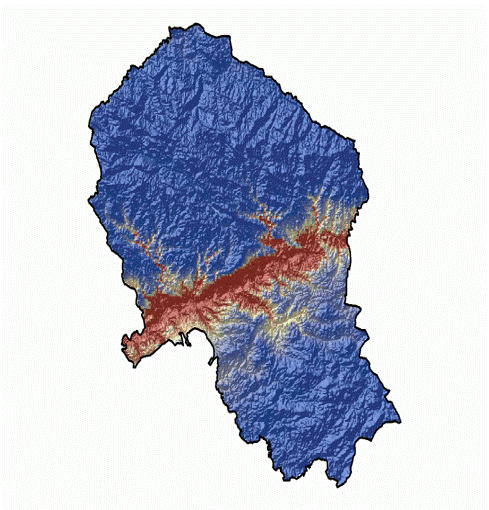

PheMPOlive (PID2023‑152718OA‑I00)
Modelización fenológica y automatización del muestreo polínico para una predicción temprana y sostenible de la producción de aceite de oliva.
Objetivo. Integrar fenología, aerobiología, clima regionalizado y automatización para anticipar la cosecha en cuatro escalas (almazara, provincia, Andalucía y España), con dos cortes de predicción (julio y noviembre).
Razonamiento. El polen atmosférico resume la intensidad de floración a gran escala y, al acoplarse con el estado fenológico y los extremos climáticos, permite estimaciones robustas de rendimiento. La red automática valida y acelera este flujo de información.
Equipo UCO. IP: Jose Oteros. Miembros del equipo de investigación: Carmen Galán Soldevilla, Purificación Alcázar Teno. Equipo de trabajo: Carmen García Llamas, Moisés Martínez‑Bracero, Rocío López‑Orozco, Herminia García‑Mozo, Aurora Holgado, Qasim Farooq, Sara Parras. Expertos de campo: Thalia Morales, María José Tenor Órtiz y Francisco Solano Bellido

1) Modelos de predicción de cosecha
Resumen rápido de indicadores
Se implementa un ensamblado de métodos (regresión aditiva, Random Forest, SVM, redes neuronales y PLS) con tres familias de predictores: (a) indicadores polínicos (intensidad, umbrales, fechas de inicio/pico/fin), (b) ventanas meteorológicas críticas (agua y temperatura, especialmente en cuajado/lipogénesis) y (c) estado fenológico regionalizado.
La relación entre polen y producción está documentada por el Grupo RNM‑130 y se consolidó en el modelo de índices para el olivar (Oteros et al., 2014; DOI 10.1007/s13593-013-0198-x).


Serie histórica de producción (Toneladas de Aceitunas)· Andalucía vs España
Fuente: Anuarios de Estadística Agraria (Ministerio de Agricultura, Pesca y Alimentación) y Junta de Andalucía.
2) Modelo fenológico
Se emplea PhenoFlex (acumulación de frío + calor con transición sigmoidal) y un banco comparativo de 21 métodos (paquete phenoR) para seleccionar el mejor desempeño (MAE/RMSE). La validación se realiza con series largas de la provincia de Córdoba y la regionalización sobre la superficie de olivar a 0.1°.
La imagen de floración de Olea europaea sirve como referencia visual de las fases BBCH. El seguimiento semanal de fenología combina visitas de campo y material fotográfico estandarizado.



3) Índice mensual de polinización (provincia de Córdoba)
Para proteger la confidencialidad de los datos históricos, se muestra un índice relativo mensual (0–100) en lugar de concentraciones absolutas. El 100% representa el mes histórico con mayor promedio provincial en toda la serie disponible.
Índice anonimizado para difusión pública (sin valores absolutos de polen por m³).
4) Datos de polen en tiempo real (EBAS) · SYLVA
Los datos en tiempo real proceden de SYLVA, que ha permitido la automatización del muestreo en el sur del Mediterráneo y la generación de librerías de entrenamiento para distintos dispositivos (BAA500, Swisens Poleno Jupiter y PollenSense), incluyendo especies clave como el olivo. Acceso mediante EBAS (NILU). Conjuntos de referencia: data.sylva.bioaerosol.eu.


5) Componentes del proyecto
- Fenología: modelización PhenoFlex y comparación de métodos; regionalización sobre superficie de olivar.
- Aerobiología: parámetros de estación polínica (intensidad, duración, picos, umbrales) y homogeneización con automáticos.
- Meteorología: clima regionalizado (ECA&D/Copernicus) y extremos en ventanas críticas.
- Modelos de cosecha: ensamblado multi‑modelo (predicciones en julio y noviembre) con distribución de probabilidad.
- Automatización & plataforma: red automática, integración EBAS y portal de información para el sector.